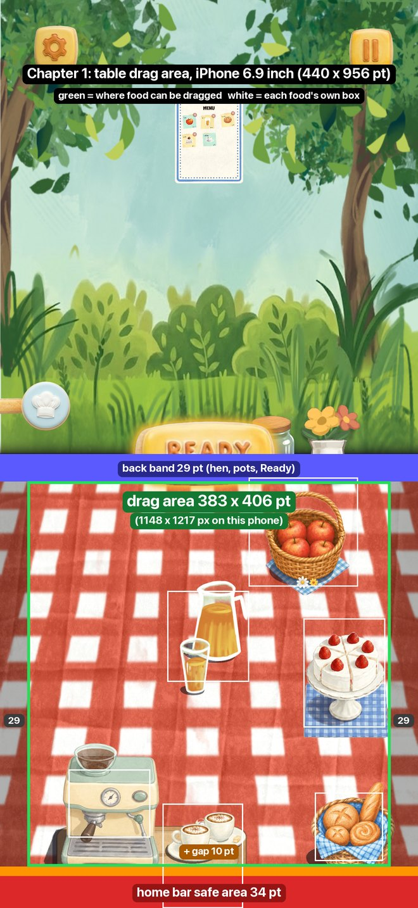
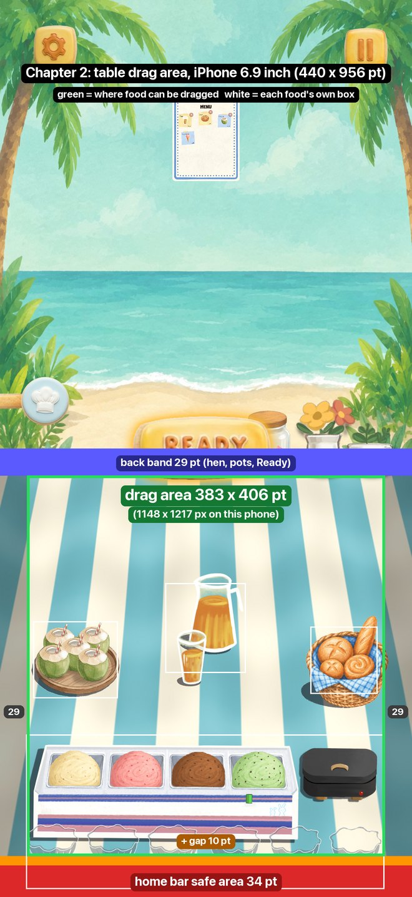
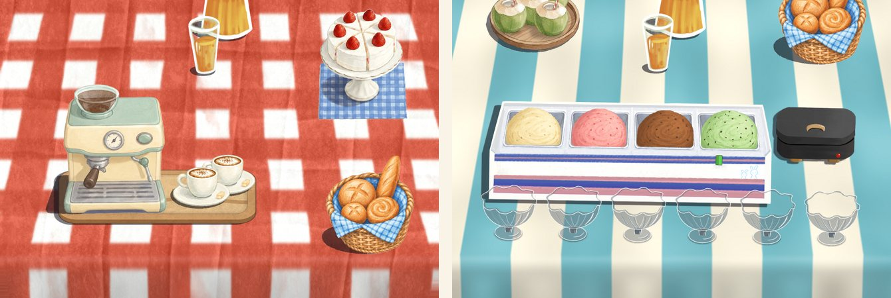
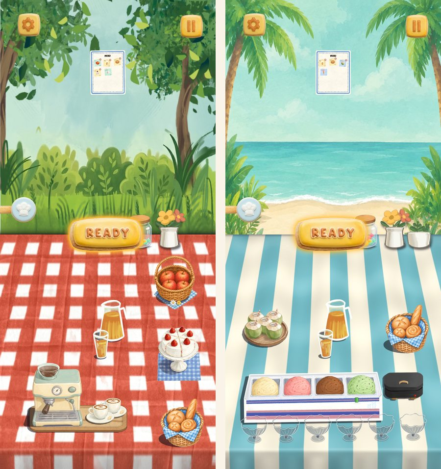

Food Truck Cafe
23 November. 2026.11.23 is waiting for Apple's review; 2026.11.20 is live.
1Next
You
Release 2026.11.23 is with Apple (submitted 23 November, 13:20). It goes out by itself once approved.
C chapter tab: three cabin scenes from your new direction (pink, white, mint; cabin with a big window onto a ski resort), to pick from.
Table start places fixed (whole box out of the safe area): Current.
Cloth front drop in the bottom safe area, chapters 1 and 2: Current.
Bug hunt: four small fixes, both chapters played through clean: Current.
Ads fix: approved; in the next build.
Header: four contents on each of the three backgrounds you liked (Q&A), for when you decide; search versions from A below it.
Me
I watch the review and tell you when the release is live.
2Q&A
Header: four contents on the three backgrounds (23 Nov)
![Twelve word-free header banners in three columns, then six of them on iPhone store pages. Left column A: cream with mint dots under a mint and white scalloped awning. Middle column B: cream with mint dots and a mint scalloped hill along the bottom. Right column C: a metal baking tray seen from above on mint gingham. On A and B the rows are: 1 customers in an arc around the truck with small hearts; 2 an arch of food cookies over the truck with a customer at each end; 3 customers queued at the truck window, the girl in front handed an ice cream; 4 every customer holding the food it loves at its chin beside the truck. On the tray: 1 the truck cookie in the middle with two columns of customers each side and a heart and a star; 2 six customers in an oval around a big truck cookie; 3 a bakery display, each customer beside its food in two rows of four; 4 the customers and their foods laid out in a heart with little heart cookies between and the truck inside](hdrb_header.jpg)
- Backgrounds: A = N3's awning; B = N6's mint hill; C = N5's baking tray on mint gingham.
- On A and B: 1 customers in an arc around the truck; 2 an arch of food cookies over the truck; 3 the queue at the window, an ice cream handed out; 4 everyone with the treat they love.
- On the tray: 1 tidy grid around the truck; 2 a ring around a big truck; 3 a bakery display, each customer beside its food; 4 a heart of cookies.
- Why one large picture: Apple takes one 3840 x 1646 picture for every device; iPad, Mac and landscape show most of its width, an upright iPhone only about the middle third; the white box is the part every device shows.
Search Results (from A): four versions (23 Nov)
![Four search pictures built on the road trip idea, each in an iPhone search below. A1: the chapter 1 forest blending into the chapter 2 beach, a road along the bottom with the small red truck, two tilted phones and the words Bake and serve on the road. A2: the big red truck on the road in front, one big phone with the picnic table, the same words. A3: forest on the left with the picnic table phone, beach on the right with the beach table phone, the truck on the road between them, the words From picnic to beach. A4: a winding road from the forest to the beach with the truck on it, the picnic table and the beach table as round pictures, Bake and serve on the road](hdrv_search.jpg)
- Search: A1 tidied (one forest and one beach, no repeated copies); A2 the big truck and one big phone; A3 split, picnic left and beach right, "From picnic to beach"; A4 a winding road with both tables as round pictures.
3Current
Table drag area: every food now starts inside it. 23 November; not in a build yet. iPhone 6.9 inch (440 x 956 pt), with the phone's home bar simulated in the editor; both chapters use the same table.


- Bottom safe area: the home bar strip (34 pt on every Face ID iPhone) plus a 10 pt gap; the sides keep 29 pt, the back band 29 pt.
- Sizes: iPhone 6.9 inch 383 x 406 pt; iPhone 15/16 342 x 358 pt; iPhone 13 mini 326 x 340 pt; iPhone SE (no home bar) 335 x 307 pt; iPad 13 inch 949 x 613 pt.
- Correction: my first pictures were taken in the editor, which has no home bar, so they showed the glasses and cups lower than a phone does. On a phone the ice cream station was already kept inside; the coffee cups' box started 10 pt low, in the gap; other foods were checked by their centre only.
- Fixed: the coffee station (machine, cups, tray) moves up together until its lowest box is inside, and every other food starts with its whole box inside, as a drag keeps it.
The cloth falls over the table's front edge. 23 November; not in a build. iPhone 6.9 inch, home bar simulated in the editor.


- Where: the bottom safe area (home bar plus the 10 pt gap, 44 pt on Face ID iPhones) is now the cloth's front, hanging down from the table's edge. The drag area ends at that edge, so food stands right on it. Phones without a home bar and iPads get at least 29 pt of drop.
- Style: made from each cloth's own picture, so the colours, paper texture and creases match. The columns and stripes hang straight down from where they meet the edge. The checks are square on the front (the top shows them squashed by the angle), with a soft highlight on the rounded edge, the front a little darker, and faint drape folds.
- A new chapter only needs its own cloth_front picture (the same script makes it from the cloth).
Bug hunt: four fixes, nothing that crashes. 23 November; on main, not in a build.
- Checked: a full review of every code change since the live 2026.11.20; chapter 1 played through all 12 days and chapter 2 through all 16 in the editor (no errors); TestFlight feedback and crashes (nothing new); the bugs folder (nothing new).
- Update card could lock a player out. If a later release ever needs a newer iOS than a player's phone has, the card would ask for an update the phone cannot install, with no way past it. Now no card then. Copies of 2026.11.23 do not have this check, so I noted: keep the minimum iOS at 15.0 for now.
- Day card over the day 9 star scene: tapping day 9 just as the map opened could open today's card on top of the star flying. The card now waits.
- Truck driving twice: changing the map page while the truck drove could make it jitter. The page arrow now waits for the truck (at most 2 s).
- Tutorial carried into day 1: the demo's coffee bag wait and picked apples stayed into the first day. The tutorial now resets the kitchen like every day end.
Ads start fix: approved, on main; it goes into the next build.
4MVP
Nothing open. Release 2026.11.23 is submitted.
5Backlog
Nothing open.
6Analysis
Nothing open.
7Marketing
Nothing open.